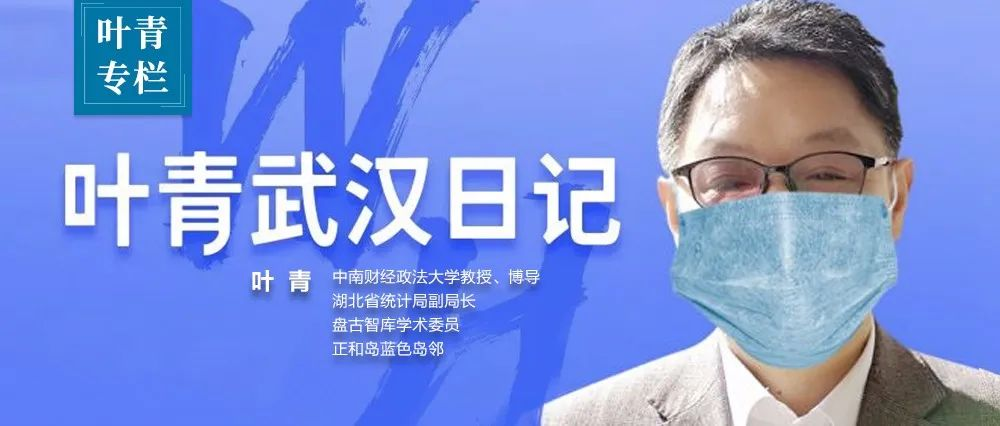

数说疫情0223：北京昨日首现零新增！湖北以外地区疫情得到遏制
原文链接 备份链接 全国21省份22日零新增，抗疫战果继续巩固。此前我们预测湖北疑似病例存量，在拉网排查取得成功后会于22日开始下降，最新数据确实印证了该预测 文 |《财经》数据研究员 徐进 图 |《财经》视觉中心 编辑 | 谢丽容 …
岛语

非常时期，武汉成了全国人民挂念、祈福的城市。封城后，武汉人民的真实生活是什么样？随着抗“疫”有条不紊的进行，武汉发生了哪些变化？还存在哪些问题？
正和岛自1月26日起特别推出“叶青专栏”。叶青是一位定居武汉40年的市民，也是一名学者和官员。在过往多期的专栏文章里，叶青实时记录了很多观察和亲历的事件，并提了很多建设性的建议，深受读者好评。
叶青本人近期也受邀参加凤凰网“一虎一席谈”节目录制、武汉日记被《人民日报》旗下的《人民周刊》等转载。这将是一份宝贵的史料。感谢他，我们得以更真切地感知到武汉疫情全方面的进展。武汉终将好起来！
*作者 | 叶青 正和岛蓝色岛邻*
排版 | 张珍珍 正和岛湖北岛丁
来源 | 正和岛（ID：zhenghedao）
01
数字
22日，正月二十九。周六。雾霾到晴。
22日，全国新增确诊病例648例，新增死亡病例97例（湖北96例，广东1例），新增疑似病例882例。
当日新增治愈出院病例2230例，解除医学观察的密切接触者22128人，重症病例减少509例。
截至22日，全国确诊病例51606例（其中重症病例10968例），累计治愈出院病例22888例（安徽核减1例），累计死亡病例2442例，累计报告确诊病例76936例，现有疑似病例4148例。
湖北新增确诊病例630例（武汉541例），新增治愈出院病例1742例（武汉965例），新增死亡病例96例（武汉82例），现有确诊病例46439例（武汉36174例），其中重症病例10428例（武汉9228例）。
累计治愈出院病例15299例（武汉8171例），累计死亡病例2346例（武汉1856例），累计确诊病例64084例（武汉46201例）。新增疑似病例631例（武汉454例），现有疑似病例3363例（武汉2382例）。
02
校友该做什么？
各媒体都在解读《应勇履新十日》的内容。值得总结。
一是确保数据真实，“已确诊的病例不允许核减”。19日，有的市州对前期报告的临床诊断病例按照第六版诊疗方案进行订正，核减了部分确诊病例。2月20日发现并及时叫停了这一错误做法。然后将2月19日核减的病例数重新加回到确诊病例，并对当日新增病例数进行订正。
二是调整人员、明确职责，“在火线上考察干部”。疫情防控是一场大考、也是一场大战，狭路相逢勇者胜！”应勇强调，要坚决杜绝形式主义、官僚主义，能打仗、打胜仗才是硬道理。
三是隔离和救治，“让更多生命获救”。16日起，湖北全省就施行了社区管控更严措施——24小时最严格封闭管理措施。
22日下午，一场“特殊的”座谈在武汉会议中心进行。
中央指导组副组长陈一新召集部分武汉校友、楚商代表座谈。
两年前，响应武汉市委实施“百万武汉校友资智回汉工程”、发展“新时代校友经济”的号召，广大校友和楚商带着对母校、对城市的眷念热爱，抱团聚力回归、火热投资兴业，引领着武汉加快拼搏赶超发展。
如今，陈一新说，疫情无情人有情，英雄城市有担当，大江大湖有大爱。希望广大校友和楚商“再度响应，集结出发”，继续画好“武汉+母校+校友”同心圆，携手打赢武汉保卫战。
如何更好对接紧迫需求，提高校友捐助工作的实效性，陈一新提出几点建议：
在加强医护人员关爱方面有所作为。积极为本地医护人员家庭提供生活服务保障，解决一线后顾之忧；关心关爱外地援汉医疗队员，战“疫”结束后组织分批免费疗养，为援汉医疗队员子女提供就业保障。
协助解决医疗物资供应紧张难题。加强对接，找准“缺口”，让捐赠物资“物尽其用”。
帮助政府一起做好城市封控期间市民生活服务保障。发挥社会志愿者作用，协助做好孤寡老人、重症患者等弱势群体的个性化服务，满足基本生活需求。
说实话，全国各地的武汉校友、天下楚商，解决援汉的医护人员的后顾之忧，真是一个新的思路。
死盯武汉的王忠林书记，在三天大排查后，又组织了三大战役，堪称“教科书式”的抗疫模式：
一是利用大数据，摸清确诊者轨迹，以更大力度开展流行病学调查。
二是落实“四个一律”：
隔离点确诊患者，一律送到医院救治；
居家确诊患者，一律送到医院救治；
非定点医院确诊患者，一律送到定点医院救治；
治愈出院患者，一律到指定场所接受康复隔离和医学观察。
三是24小时封控措施必须严而又严，以更大力度加强封闭管理。
03
复工与创新
中国经济，在2020年的春天，被按下了暂停键。损失有多大？
清华大学国家金融研究院院长朱民：估计新冠肺炎疫情会影响今年1-2月消费减少1.38万亿元。其中，预计度假休闲旅游消费下降9026亿元，餐饮业消费下降4211亿元。不过在线教育消费有望增加300%，在线短视频消费将上升60%。
反弹是必然的，君不见，全国的复工率在天天提高。
截至21日，在23个已经公布复工率的省份中，18省份复工率超过50%，山东、福建、江苏、上海、浙江、辽宁等沿海地区复工率已超过70%，其中山东以79.4%位居首位。
全国已有24个城市复工率超过80%，舟山379家规上企业和84家重点外贸企业已全部复工。
甘肃低风险县区超过90%，防控应急响应下调至三级。
全国经济复苏，是对武汉最大的支持。
我曾经建议，企业家研发声控、感应电梯。现在真的来了。
19日傍晚，一个特殊的快递包裹历经“千辛万苦”，从上海终于抵达宜昌。次日一早，等候多时的工作人员将里面的这套特殊装备安装到了电梯上。经过一番仔细调试，这座改造加装的电梯正式开启“声控”模式，医护人员只需要报出楼层，电梯就能自动抵达目的地，从而最大程度保护他们的安全。
目前武汉所有社区、小区、村组、居民点实行24小时封闭管理措施。为方便小区出行管理，武汉市正式上线“武汉健康码”功能，实现“健康码”扫码登记模式取代手工登记填表。

武汉市民可搜索并登录微信小程序“武汉战疫”或通过“武汉微邻里”中的“我的健康码”完成实名认证并填入相关信息后在线领取自己的健康码。居民进出封闭小区时出示健康码，由小区管理员进行扫码登记。
杭州于2月11日启用“健康码”，实行绿、红、黄三色动态管理，并与钉钉企业复工申请平台打通：显示绿码者，亮码通行；显示红码者和黄码者，需要自我隔离并健康打卡，满足条件后将转为绿码。目前，大量返岗复工人员在支付宝内申领健康码，杭州健康码上线首日访问量即达到1000万。
2月17日浙江省11个地市的健康码均已上线，成为全国首个健康码全覆盖的省份，通过数字赋能加强疫情防控。
健康码是以真实数据为基础，由市民或返岗复工人员自行上网申报，经后台审核生成属于个人的二维码，作为其在本地区出入通行的电子凭证。
21日，杭州健康码重磅升级，率先实现与电子健康卡、电子社保卡的打通使用，杭州市民可凭支付宝健康码看病，杭州也成为全国首个可凭健康码看病的城市。
21日起，汉阳在武汉市率先出台新冠肺炎防控自我排查奖励办法。截至22日下午4时，已有11位汉阳辖区居民主动申报。
武汉市新冠肺炎疫情防控指挥部发布关于对新冠肺炎治愈出院患者实施康复隔离的通告（第16号）：为保障新冠肺炎治愈出院患者及其家人的健康安全，经市新冠肺炎疫情防控指挥部研究决定，22日起，新冠肺炎治愈出院患者完成医院治疗后，应到指定场所统一实施为期14天免费的康复隔离和医学观察。观察期满，身体状况符合条件的解除隔离。
现在终于知道，为什么还要增加方舱医院了。
现在超市只对团购，团购群内除了通知团购菜进度，大家如何错峰领取外，关于团购“套餐”讨论不断。
“有的套餐搭配组合不是太好”“家里没有调料了，这些套餐里好像没有”“小套餐还是多弄一些，大套餐很多东西没有用”。群友们关于“团购”内容提出不少意见。
除了套餐内容的优化，对于团购价格也有网友提出建议。网友“胡女士”向记者分享了自己的团购经历：感叹肉价过高。“昨天在小区里团购了猪肉，五花肉42元一斤，瘦肉50元一斤，排骨要50元一斤，我记得之前买的价格好像是五花肉20多30元一斤的样子。”
于是，武汉市市场监督管理局发布《关于规范我市疫情防控期间线上团购套餐价格行为的通告》，对团购套餐销售方式、商品价格等进行了明确规定。
比如，《通告》称，经营者制定线上团购套餐品类应该符合实用、经济、急需的原则，非市民必需消费品不得列入线上团购套餐进行捆绑销售。
经营者违反上述规定，未造成实际危害后果，经市场监管部门提醒、告诫立即改正的违法行为，可依法从轻、减轻或者免予行政处罚；对于相互串通操纵价格、哄抬价格牟取暴利等社会影响恶劣的违法行为，依法从重从快处理；涉嫌构成犯罪的，依法移交公安机关处理。
这些都有很大的震慑作用。真正是民有所呼，局有所应。
21日晚，上海捐赠的全自动核酸检测仪已在武汉7家医院“上岗”，该设备相当于一个核酸检测工作站，一套设备里可完成核酸提取的全部过程。

04
保护医护人员
22日，中央应对新型冠状病毒感染肺炎疫情工作领导小组印发《关于全面落实进一步保护关心爱护医务人员若干措施的通知》。
《通知》就进一步保护关心爱护医务人员提出十方面措施。
一要提高疫情防治人员薪酬待遇。各地要在落实现有政策基础上，将湖北省（含援湖北医疗队）一线医务人员临时性工作补助标准提高1倍、薪酬水平提高2倍，扩大卫生防疫津贴发放范围，确保覆盖全体一线医务人员。
二要做好工伤认定和待遇保障。
三要实施职称评聘倾斜措施。
四要落实一线医务人员生活保障。
五要加强医务人员个人防护。
六要确保轮换休整到位。对长时间高负荷工作人员安排强制休息。疫情结束后，及时组织一次免费健康体检和疗养休养，并适当增加休息和带薪休假时间。
七要及时做好心理调适疏导。
八要切实落实有困难家庭的照顾帮扶。开通一线医务人员家属就医绿色通道，建立社区干部联系帮扶一线医务人员家庭制度，对于一线医务人员子女教育给予更多帮助关爱。
这一点，武汉校友会有动作的。
九要创造更加安全的执业环境。
十要开展烈士褒扬和先进表彰。
29岁，牺牲在抗疫一线——武汉正在悼念因公殉职的医生彭银华。
05
来源地在哪里？
22日，以下消息，引起武汉的波动。
中国科学院西双版纳热带植物园、中国科学院核心植物园保护生物学中心、韶关大学亨利霍夫生物农业学院、华南农业大学林学院风景园林学院和中国脑科学研究所的研究发现，华南海鲜市场并非新冠病毒唯一的发源地。
他们认为，早在病毒进入华南海鲜市场之前，也就是11月下旬或12月初，病毒就已经开始了人传人，还有了几种不同的类型。
其中C组进入了华南海鲜市场，并在海鲜市场发展壮大，超过了它的前辈A组、B组，迅速“发展壮大”，蔓延到整个湖北。
而海鲜市场之外的武汉其他地方还有其他组的病毒存在，这些鼻病毒被人们逮到了国内以及全球各大洲的其他国家。
看来，科学家的研究远没有停止。
06
小结
不管病毒来自哪里，市中心的海鲜市场、野生动物市场早都应该搬迁。
不知道为什么没有搬迁？
希望健康码给每个人带来健康。
解决团购的副作用，需要政府部门立马出手。
再也不能雪上加霜了。

到了像救人一样去救企业的时候了！
正和岛作为一个企业家帮助企业家、危难之际互相雪中送炭的平台，2月15日到3月底推出一个特殊政策：只要是有人推荐、具备登岛资格的企业家朋友，确认后可直接享受岛邻或金海客的相关服务价值，登岛费用可以到3个月后度过这段危机时再考虑。
也就是说，天冷又缺钱，就先到岛上随时取“炭”烤火，愿不愿意交炭钱3个月以后再说。真有这样的好事？
扫码领取正和岛企业家暖心包
**报名咨询：正和岛张珍珍**
18511280817
原文链接 备份链接 全国21省份22日零新增，抗疫战果继续巩固。此前我们预测湖北疑似病例存量，在拉网排查取得成功后会于22日开始下降，最新数据确实印证了该预测 文 |《财经》数据研究员 徐进 图 |《财经》视觉中心 编辑 | 谢丽容 …
原文链接 备份链接 为什么我们说武汉战局出现了反守为攻的转机？主要有3点 文 |《财经》数据研究员 徐进 图 |《财经》视觉中心 编辑 | 谢丽容 一、 累计确诊病例：趋势现“顶” 截至2月21日24:00，全国累计报告确诊新冠肺炎病 …
原文链接 备份链接 _ 武汉新增确诊病例和新增治愈病例今日跨过“黄金交叉”点，从此全国包括武汉在内将逐日加大释放以医院病床床位为核心的医疗资源。但也应注意到2月20日数据出现两个异常：一是非湖北地区新增病例出现巨大反弹；二是国家卫健委与湖 …
原文链接 备份链接 岛语 非常时期，武汉成了全国人民挂念、祈福的城市。封城后，武汉人民的真实生活是什么样？ 武汉在发生哪些变化？ 正和岛自1月26日起特别推出“叶青专栏”。叶青是一位定居武汉40年的市民，也是一名学者和官员。在过往多期的专 …
原文链接 备份链接 【财新网】（记者 黄蕙昭 综合）距离1月20日晚钟南山院士宣布病毒“肯定人传人”已近一月，湖北内外氛围有别：疫情核心区武汉，新冠疫情仍处于胶着对垒状态，从2月16日起，武汉市启动三天拉网式大排查，誓将底数摸清，把握疫情 …